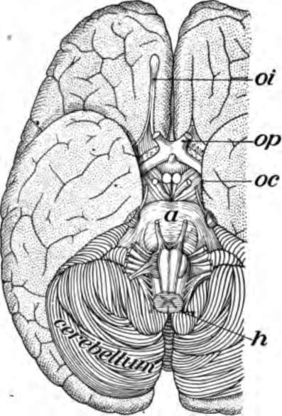

Chapter XVI. How The Body Is Governed
Description
This section is from the book "The Human Body And Health", by Alvin Davison. Also available from Amazon: The Human Body and Health.
Chapter XVI. How The Body Is Governed
Need Of A Manager
There are over five hundred separate organs in the body, each having a distinct duty to perform. Every muscle and every gland has a special work, but all the organs must act together in harmony to keep the body in health. For accomplishing this a general manager is needed to direct the work. This manager is the nervous system, which tells each organ when to act and how much work to do.
If there were no nervous system, the muscles could not be made to move the body, or the stomach to digest the food. When one takes a bite of food an order comes by the nerves to the salivary glands to make saliva and send it out into the mouth. A moment later other orders are given for digestive juices to flow into the stomach. Thus the right work is done at the right time and in the right place by the manager's command.
Parts Of The Nervous System
The nervous system is made of three parts: 1. The brain, located in the skull; 2. the spinal cord, hanging in the inch-wide canal of the spinal column; 3. the nerves which appear like white cords extending from the brain and spinal cord outward as they divide into finer branches throughout the body. The brain and spinal cord give orders and the nerves carry these orders to the organs (Fig. 111).
Fig. 111. The nervous system viewed from behind.
Fig. 112. A slice across the brain to show white and gray matter.
Fig. 113. A nerve cell from the spinal cord. Much enlarged.
Structure Of The Nervous System
A slice cut across the brain or spinal cord shows that part of the nerve substance is white and part is gray. The gray matter is made of tiny irregular masses called cell bodies, while the white matter is formed of fine threads named nerve fibers. These fibers are fastened to the cell bodies and are, therefore, true parts of them.
A complete nerve cell consists of a cell body with from two bo a dozen fine threads called processes extending out from it. One of these processes is often from one to three feet in length. This long process is a, nerve fiber. A bundle of nerve fibers forms a nerve.
The Nerves
The bodies of the nerve cells are all located in the brain or spinal cord, or very near to these two parts. From these cell bodies, the processes extend to the face, the arms and the legs. Thousands of these processes at the under surface of the brain and along the spinal cord are collected into many bundles to form the nerves (Fig. 115). The nerves connected with the brain are called cranial nerves. They pass through holes in the floor of the skull. The spinal nerves are those joined to the spinal cord. A third set of nerves, branching throughout the body from some bunches of cell bodies along the front side of the backbone, are named sympathetic nerves (Fig. 117).
Fig. 114. Some of the nerves of the face.
How A Message Travels On A Nerve
There are two chief kinds of nerves. One kind called sending nerves carry messages from the brain and cord to the muscles and other organs to make them act. Another kind, known as the receiving nerves, carry messages of seeing, hearing and feeling from various parts of the body to the spinal cord and brain. The message telling that the finger is burnt or that an apple is sweet travels on a receiving nerve.
Sometimes receiving nerve fibers and sending nerve fibers are bound together in the same bundle as in the spinal nerves. Messages may then travel side by side but in opposite directions as when a baseball is caught. The feeling of the ball as it touches the hand rushes up the receiving nerve fibers to the cord, which quick as lightning sends a message down the sending nerve fibers to the muscles, making the hand close on the ball. A message travels so rapidly on a nerve that the news of a hurt toe can reach the brain in one half the time between two ticks of a watch.
The Cranial Nerves
There are twelve pairs of cranial nerves joined to the base of the brain. One pair, the olfactory, extends to the nose, four pairs to the eyes, and one pair to the ears. The others are distributed to the head, neck and shoulders, with the exception of one pair which goes to the lungs and stomach.
Fig. 115. Under surface of the brain showing stumps of nerves cut off. oi, nerve of smell; op, nerve of sight; h, spinal cord cut off at the medulla.
The Spinal Nerves
There are 31 pairs of nerves joined to the spinal cord. Each of these nerves is united to the cord by two branches. The front one is called the sending root because the messages sent by the brain or cord to make an organ act pass through this root. The back branch is named the receiving root as all news of heat, cold, pain and pressure pass through this root.
Some of the spinal nerves such as those supplying the arms and legs are two or three feet long. The great sciatic nerve, which is nearly as large as a lead pencil and extends down the back of the leg, is the largest nerve in the body.
The Sympathetic Nerves
On either side of the backbone, and within the body cavity, is a chain of bunches of nerve cells. Several other similar bunches lie near the stomach and also lower down in the body cavity. These bunches of nerve cells are called ganglia. These ganglia with the nerve fibers joining them and extending from them to the glands and involuntary muscles all over the body, form the sympathetic nervous system (Fig. 117).
Continue to: